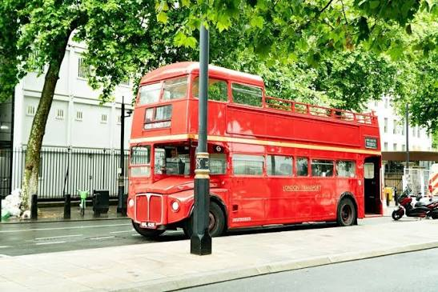
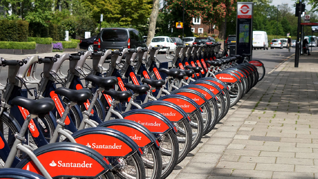
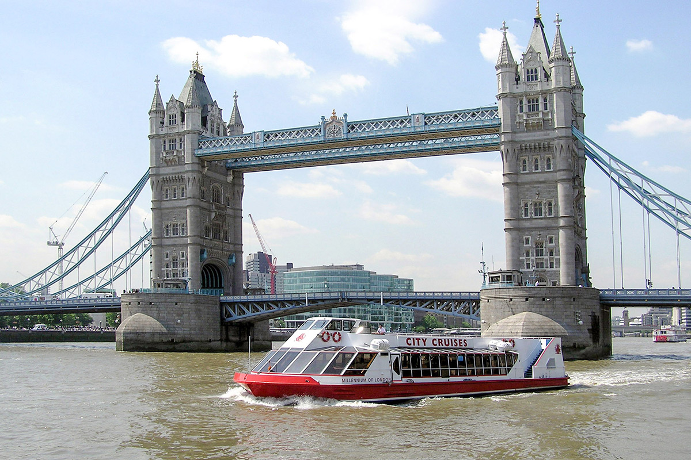

Red buses

Red double-decker buses
Sit upstairs at the front and look at the city. It is a cheap way to see London.
London is big, but it is easy to travel around. Choose your transport.
The London Underground is also called "the Tube". It is the oldest metro in the world. It has 11 lines. Each line has its own colour. Look for the red circle with a blue line: that is the Underground sign.


Sit upstairs at the front and look at the city. It is a cheap way to see London.

A means of transport to cycle in the city. Take a bike at a bike station, ride through the parks and leave it at another station.

Travel by boat on the River Thames. It is slower than the Tube, but the view is better.